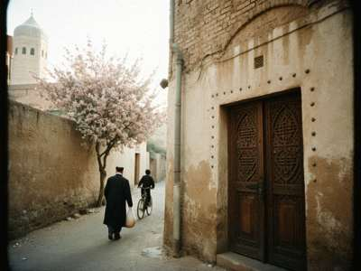
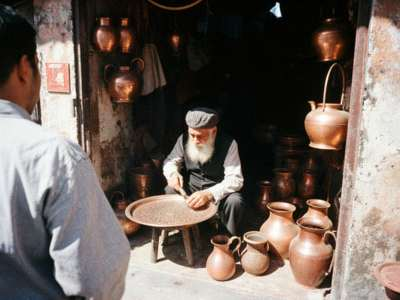

|
I was born in the Old City, in a courtyard house off the lane that goes down from Temir-Kapka to the bazaar, and I lived there until
1985, when my parents got a flat in the Soviet Centre with a bathroom and my mother cried with happiness. Now every Sunday I
walk back. These are my photos, from this spring and summer. The Old City is changing (new walls, satellite dishes, the
American charity painting the gates), so I want to keep it as it was.
1. The lanes

Our lane in April. The apricot behind the wall is Rahim-aka's, he still gives the children apricots over the wall every June.
The lanes of Köhne Diz are not straight anywhere. My father said they were made crooked on purpose, against the wind and
against enemies. My mother said they were made crooked because everybody built where they wanted. Both are probably true.
If you get lost, walk downhill: you will come to the bazaar on the east side or to the river.
2. Coppersmiths' Row

Usto Karim in his shop. He made the copper basin my grandmother washed me in.
When I was a boy there were more than twenty workshops and you could hear the hammers from the Juma Mosque. Now there are seven.
The young ones go to work at the base or drive taxis. Usto Karim says when he dies the row will be a souvenir shop. Go and buy
something real from him while you can.
3. Other places (photos coming)
- Temir-Kapka, the north gate — the only gate of the old town wall still standing.
- Kalan Darwaza, the south gate of the citadel enclosure.
- The citadel mound on the west side, with the city museum. Climb it at sunset, you see the whole valley.
- Sarchashma springs — the water is cold even in August. Women still come with buckets.
- The old Telegraph Office, where my grandfather worked.
- The Juma Mosque and the Church of St. Yuhanna, five minutes apart. On Sunday mornings you hear both.
4. A small request
If you have old photos of Köhne Diz (before 1980), please, scan them or let me scan them. I will put them here with your name.
Especially of houses and lanes that are gone now.
farrukh_kohne@attelkom.net
|